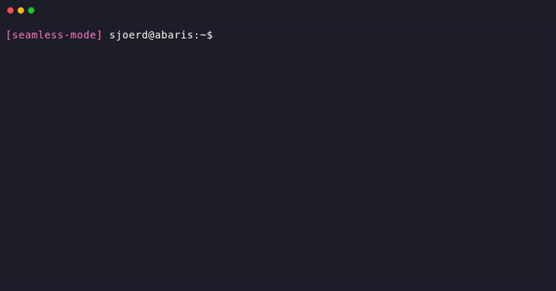

Seamless
Seamless: define your computation once — cache it, scale it, share it.
Most computational pipelines are already reproducible — the same inputs produce the same outputs. Wrap your code as a step with declared inputs and outputs, and Seamless gives you caching (never recompute what you've already computed) and remote deployment (run on a cluster without changing your code). Remote execution also acts as a reproducibility test: if your wrapped code runs on a clean worker and produces the same result, it is reproducible. If not, Seamless has helped you find the problem — whether it's a missing input, an undeclared dependency, or a sensitivity to platform or library versions.
Seamless wraps both Python and command-line code. In Python, direct runs a function immediately; delayed records the function for deferred or remote execution. From the shell, seamless-run wraps any command as a Seamless transformation — no Python required. In both cases, the transformation is identified by the checksum of its code and inputs: identical work always produces the same identity.
Sharing works at two levels. The lightweight path is to exchange checksums: if two researchers have computed the same transformation, they already have the same result — no data transfer needed. The concrete path is to share the seamless.db file, a portable SQLite database that maps transformation checksums to result checksums. Copy it to a colleague, a cluster, or a publication archive, and every cached result travels with it. Combined, these two paths let a lab build up a shared computation cache that grows over time and never recomputes what anyone has already computed.
What about interactivity?
This is Seamless 1.x, running on a new code architecture. Seamless 0.x offered an interactive, notebook-first workflow experience with reactive cells, Jupyter widget integration, filesystem mounting, and collaborative web interfaces. These features are being ported to the new architecture. If your work is primarily interactive/exploratory, you can use the legacy version today, or watch this space for updates.
Installation
pip install seamless-suite
This installs all standard Seamless components. For a minimal install, the core user-facing packages are:
| Package | Import | Provides |
|---|---|---|
seamless-core |
import seamless |
Checksum, Buffer, cell types, buffer cache |
seamless-transformer |
from seamless.transformer import direct, delayed |
direct, delayed, seamless-run, seamless-upload, seamless-download |
seamless-config |
import seamless.config |
seamless.config.init(), seamless-init |
Quick Examples
Python: direct
from seamless.transformer import direct
@direct
def add(a, b):
return a + b
add(2, 3) # runs the function, returns 5
add(2, 3) # cache hit — returns 5 instantly
Command line: seamless-run
export SEAMLESS_CACHE=~/.seamless/cache # global persistent caching
seamless-run 'seq 1 10 | tac && sleep 5' # runs, caches result
seamless-run 'seq 1 10 | tac && sleep 5' # cache hit — instant
Seamless mode
Automatically wrap the bash commands you type

In this documentation
Getting started
- Wrapping Python and bash —
direct/delayedhello-world +seamless-runbasics + pitfalls - Setting up a local cluster — persistent caching, service configuration,
seamless-init - Seamless mode — interactive shell mode that wraps commands with
seamless-runautomatically
How-to guides
- Caching, identity, and sharing — what constitutes a cache key,
ChecksumandBuffer,.CHECKSUMsidecars, thepersistentcommand - Composition — driver transformations, fan-out,
.modulesand.globals - Local parallelism —
execution: spawn,spawn(N)in Python,seamless-queue - Remote execution — jobserver vs daskserver,
set_stage(),--local - HPC specifics — SLURM/OAR queue definitions, adaptive scaling, pure Dask mode
- Remote job launching — CLI workflow for remote clusters, checksum vs buffer distinction, deep checksums
- Sharing in depth —
seamless.dbportability, scratch, fingertipping, replay by checksum
Reference API
- Overview — full API symbol classification
- seamless-core —
Checksum,Buffer, cell types - seamless-transformer —
direct,delayed,Transformation,spawn - seamless-config —
init(),set_stage(), YAML command language, cluster definitions - seamless-remote — remote clients,
seamless-resolve,seamless-fingertip - seamless-dask — Dask integration,
seamless-dask-wrapper - seamless-jobserver — lightweight HTTP job dispatcher
- seamless-database — transformation result cache server
- remote-http-launcher — service launcher and lifecycle manager